Notebook(Final)
Final Version
Loading some Packages for Better Presentation of Results
Definitions
Initial Population
Norm Population
Initial Populations In line with the paper, a population is generated where the money is normally distributed with a mean of 100.
To save computation time, the number of agents is reduced from 5000 to 1500. Additionally, the population is sorted and assigned an ID to track them. Agents with small IDs receive the least money, while agents with large IDs have a lot of money.
Code
nA = 1500 # number of Agents
ID = seq_len(nA) # ID of the Agents
M0pop = 100 # Mean amount of Money in the Start-Population
PopNorm <- data.frame( ID = ID,
Money= sort(rnorm(nA, mean = M0pop, sd = 0.2 * M0pop))
)Equal Population
Also in line with the paper, a second population is generated where all agents start with the same amount of money.
Code
PopEqual <- data.frame( ID = ID,
Money = rep(M0pop, times = nA)
)Functions
Gini-Faktor
To describe the distribution of money in the population, a function is defined to calculate the Gini coefficient.
Needs
- Vector with Money distribution
Output
- Gini-Factor
Timeline
The same is also implemented as a time function.
Needs
- Matrix with Money distribution as vector per time
Output
- Vector with Gini-Factor per time
Transaction rule
In line with the paper, a random distribution of money between two agents is defined.
Needs
- Nothing
Output
- Vector with a random number and 1minus this number
Probabilities
Since it was suspected in the sketchbook that the reason for the outcome is the decreasing probability of meeting an agent with more or a lot of money, a function is defined here to calculate various probabilities:
Probability of winning money (probwin)
Probability of having more money than the current median in the population after the exchange (probmed)
Probability of having more money than the mean in the population after the exchange (probmean)
Needs
- Vector with Money distribution
Output
Summary (Sum) with minimum, maximum, median and mean for the given Money and the mention probabilities
Distribution (Dist) for the same values
Code
calc_p_s <- function(VM) {
Dist <- data.frame(Money = VM,
probwin = 0,
probmed = 0,
probmean = 0
)
Sum <- data.frame(Money = c(min(Dist$Money),
max(Dist$Money),
median(Dist$Money),
mean(Dist$Money)
),
probwin = 0,
probmed = 0,
probmean = 0
)
rownames(Sum) <- c("min", "max", "med", "mean")
M_Med <- Sum["med", "Money"]
M_Mean <- Sum["mean", "Money"]
for(i in 1:nrow(Dist)) {
M_A <- Dist[i,"Money"]
M_oA <- Dist[c(-i),"Money"]
pwin <- M_oA*0
pmed <- M_oA*0
pmean <- M_oA*0
for(ii in 1:NROW(M_oA)) {
Pot <- max(M_A + M_oA[ii], 10e-8)
pwin[ii] <- 1-min(1, M_A/Pot)
pmed[ii] <- 1-min(1, M_Med/Pot)
pmean[ii] <- 1-min(1, M_Mean/Pot)
}
Dist[i,"probwin"] <- mean(pwin)
Dist[i,"probmed"] <- mean(pmed)
Dist[i,"probmean"] <- mean(pmean)
}
for (i in c("probwin","probmed","probmean")) {
Sum[[i]] = c(min(Dist[[i]]),
max(Dist[[i]]),
median(Dist[[i]]),
mean(Dist[[i]])
)
}
Output <- list(Sum = Sum, Dist = Dist)
return(Output)
}The same Function with matrix calculations, what is much faster!
Code
calc_p <- function(VM) {
n <- length(VM)
MM <- matrix(rep(VM,times=n),n,n)
S <- (VM+t(MM))
S[S==0] <- 10e-8
pwin <- (1-t(MM)/S)
diag(pwin) <- 0
pmed <- 1-(median(VM)/S)
pmed[pmed<0] <- 0
diag(pmed) <- 0
pmean <- 1-(mean(VM)/S)
pmean[pmean<0] <- 0
diag(pmean) <- 0
Dist <- data.frame(Money = VM,
probwin = colSums(pwin)/(n-1),
probmed = colSums(pmed)/(n-1),
probmean = colSums(pmean)/(n-1)
)
Sum <- data.frame(Money = c(min(Dist$Money),
max(Dist$Money),
median(Dist$Money),
mean(Dist$Money)),
probwin = c(min(Dist$probwin),
max(Dist$probwin),
median(Dist$probwin),
mean(Dist$probwin)),
probmed = c(min(Dist$probmed),
max(Dist$probmed),
median(Dist$probmed),
mean(Dist$probmed)),
probmean = c(min(Dist$probmean),
max(Dist$probmean),
median(Dist$probmean),
mean(Dist$probmean))
)
rownames(Sum) <- c("min", "max", "med", "mean")
Output <- list(Sum = Sum, Dist = Dist)
return(Output)
}Timeline
The same is also implemented as a time function.
Needs
- Matrix with Money distribution as vector per time ( as reported from ecosim$timeline)
Output
- Matrix probability-values per time in colones (long form)
Code
calc_p_t <- function(MM) {
pnt <- calc_p(MM[,1])
tx <- as.numeric(gsub("n", "",colnames(MM)[1]))
pnts <- data.frame(Time = rep(tx, times = 4),
Res = colnames(pnt$Sum),
t(pnt$Sum)
)
for(i in 2:ncol(MM)) {
pnt <- calc_p(MM[,i])
tx <- as.numeric(gsub("n", "",colnames(MM)[i]))
pnti <- data.frame(Time = rep(tx, times = 4),
Res = colnames(pnt$Sum),
t(pnt$Sum)
)
pnts <- rbind(pnts,pnti)
}
rownames(pnts) <- NULL
return(pnts)
}Economic Simulation
Finally, a simulation is created that simulates a certain number of money exchanges.
Needs
Number of exchanges
Startdistribition of Money
Steps for the timeline (optional)
Output
Summary (Sum) with ID, number of exchanges, Money at beginning and Money at the End
Matrix with Money distribution(Timeline) for given time steps as vectors (if steps > 0)
Code
ecosim <- function( n, VM, TL = 0 ) {
df <- data.frame(ID=seq(1,NROW(VM)),
nE=0,
MT_S=VM,
MT_E=VM
)
if (TL > 0) {
M_TL <- data.frame(n0 = df$MT_S)
}
for(i in 1:n) {
rdf <- sample(df$ID, size=2)
rds <- splitpair()
df[rdf,"nE"] <- df[rdf,"nE"] + 1
df[rdf,"MT_E"] <- sum( df[rdf,"MT_E"]) * rds
if ( TL > 0 ) {
if ( i %% TL == 0) {
M_TL [[paste0("n",i)]]<- df$MT_E
}
}
}
Output <- list("Sum" = df)
if ( TL > 0 ) {
rownames(M_TL) <- df$ID
Output$Timeline <- M_TL
}
return(Output)
}Plot functions
Histogram
Needs
- Summary of a economic Simulation
Code
figHist <- function(Sim_Sum) {
Fig <- pivot_longer(data.frame(Sim_Sum),
cols = starts_with("MT"),
names_to = "Distribution",
values_to = "Money"
)
Fig$Distribution <-recode(Fig$Distribution,
"MT_S" = "at Begining",
"MT_E" = "at the End"
)
Figp <- ggplot(Fig, aes(x = Money, fill = Distribution)) +
geom_histogram(position = "identity", alpha = 0.5, bins = 50) +
ylab("Frequency") +
scale_fill_manual(name = NULL, values = c(4,3)) +
scale_color_manual(name = NULL, values = c(4, 3)) +
theme_minimal() +
theme(legend.position = "top")
return(Figp)
}Probabilities in the Population
Needs
Probability distribution from calc_p
Title for the figure
Maximum for the x axis (Money)
Code
figProb <- function(Prob, Title, xmax) {
Figd <- pivot_longer(data.frame(Prob$Dist),
cols = starts_with("p"),
names_to = "Outcome",
values_to = "Probability"
)
Figs <- Prob$Sum
Figp <- ggplot(data = Figd,
aes(x = Money,
y = Probability,
color = Outcome
)
) +
geom_point( alpha = 0.5, size = 1.5) +
scale_color_manual(name = "Probability to",
values = c(2, 3, 4),
labels = c("gain more than the Mean",
"gain more than the Median",
"gain")
) +
ylim(0, 1) +
xlim(0, xmax) +
geom_vline(xintercept = Figs["med","Money"],
linetype = "solid", color = 1) +
annotate("text",
x = Figs["med","Money"] * 0.95,
y = 0,
hjust = 1,
vjust = 0,
label = paste("Median\n=",
round(Figs["med","Money"], 0)),
color = 1) +
geom_vline(xintercept = Figs["mean","Money"],
linetype = "dashed", color = 1) +
annotate("text",
x = Figs["mean","Money"] * 1.05,
y = 0,
hjust = 0,
vjust = 0,
label = paste("Mean\n=",
round(Figs["mean","Money"], 0)),
color = 1) +
geom_hline(yintercept = Figs["mean","probmed"],
linetype = "solid", color = 3) +
annotate("text",
x = xmax,
y = Figs["mean","probmed"] * 1.05,
hjust = 1,
vjust = 0,
label = paste("Mean =",
round(Figs["mean","probmed"], 2)),
color = 3) +
geom_hline(yintercept = Figs["mean","probmean"],
linetype = "solid", color = 2) +
annotate("text",
x = xmax,
y = Figs["mean","probmean"]*0.95,
hjust = 1,
vjust = 1,
label = paste("Mean =",
round(Figs["mean","probmean"], 2)),
color = 2) +
labs(title = Title) +
theme_light() +
theme(legend.position = "top",
legend.justification = c(0, 1))
return(Figp)
}Probabilities over Time
Needs
Probability distribution from calc_p_t
Title for the figure
Code
figProb_t <- function(Prob, Title) {
Fig <- Prob[Prob$Res!="Money",c("Time","Res","mean")]
Figp <- ggplot(data = Fig, aes(x = Time, y = mean, color = Res)) +
geom_line(linewidth = 1) +
scale_color_manual(name = NULL, values = c(2, 3, 4),
labels = c("gain more than the Mean",
"gain more than the Median",
"gain")) +
ggtitle(Title) +
xlab("number of exchanges") +
ylab("Mean-Probability in the Population") +
ylim(0.30, 0.6) +
theme_light() +
theme(legend.position = "top",
legend.justification = c(0, 1))
return(Figp)
}Simulation for…
Normal Population
Simulation for 50000 exchanges with output after every 500th exchange.
Code
sNorm <- ecosim(50000, PopNorm$Money, TL = 250)Presentation of the end results
At the beginning, the distribution of money in the population looks like this. After simulating 50000 money exchanges, the following distribution emerges.
Code
Fig01 <- figHist(sNorm$Sum)
Fig01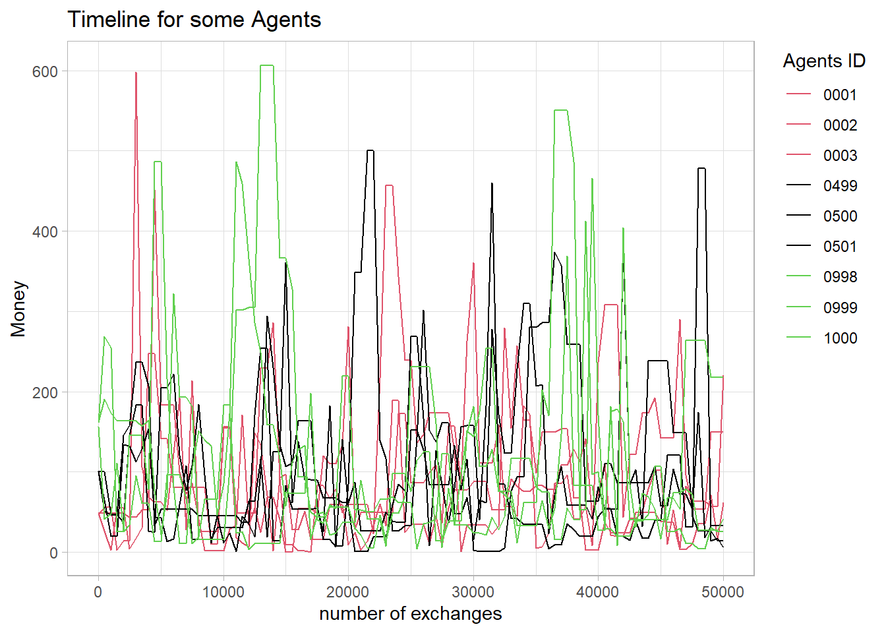
Representation of Money over time
It seems that every agent has the chance to have a lot of money in the end. This can be shown by tracking individual agents and their money. Below, nine agents are shown: three with little, three with 100, and three with the most money at the beginning.
Code
MTime <- data.frame(ID,sNorm$Timeline)
sID <- c(1,2,3,nA/2-1,nA/2,nA/2+1,nA-2,nA-1,nA)
sMTime <- MTime[sID,]
Fig02 <- pivot_longer(data.frame(sMTime),
cols = !matches("ID"),
names_to = "Time",
names_prefix = "n",
names_transform = list(Time = as.integer),
values_to = "Money"
)
Fig02$ID <- sprintf("%04d", Fig02$ID)
ggplot(data = Fig02, aes(x = Time, y = Money, color = ID)) +
geom_line() +
ggtitle("Timeline for some Agents") +
xlab("number of exchanges") +
labs(color = "Agents ID") +
scale_color_manual(values = c(2,2,2, 1,1, 1,3,3,3)) +
theme_light() +
theme(legend.position = "right",
legend.justification = c(0, 1))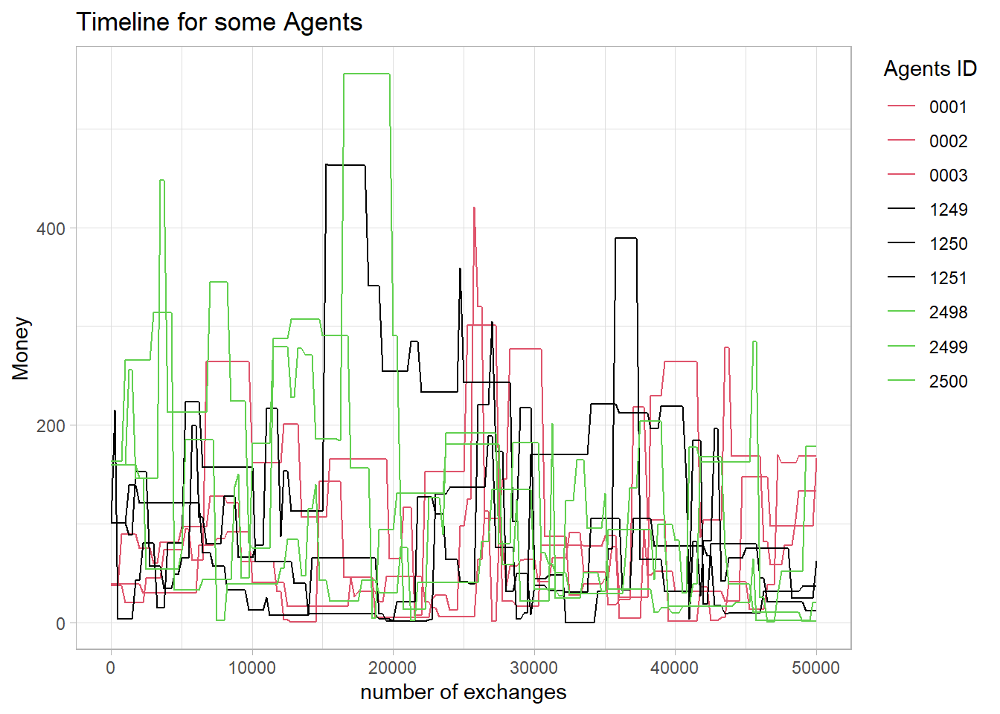
Probabilities for specific Timesteps
This can also be shown with the calculated probabilities for the next meeting for each agent.
Code
Fig03 <- figProb(calc_p(sNorm$Timeline[,1]),
"Probability at Beginning", 850)
Fig04 <- figProb(calc_p(sNorm$Timeline[,3]),
"Probability after 500 exchanges", 850)
Fig05 <- figProb(calc_p(sNorm$Timeline[,5]),
"Probability after 1000 exchanges", 850)
Fig06 <- figProb(calc_p(sNorm$Timeline[,NCOL(sNorm$Timeline)]),
"Probability at the End", 850)Initially, it seems to be a fairly fair trade, so agents with little money have a higher probability of winning money in the next exchange. However, they also have a lower probability of ending up above the median or the mean. At the beginning, all probabilities in the population are about 0.5 on average.
Code
Fig03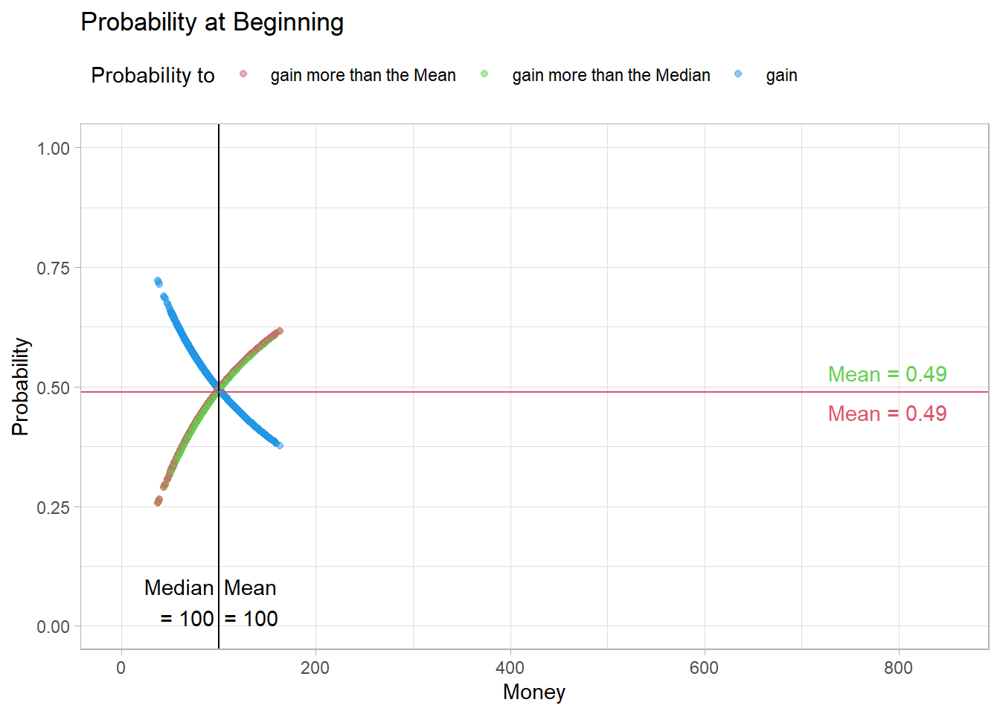
However, after a few meetings, this changes. The probability of ending up above the median or the mean decreases.
The reason for this is that with each exchange, a rich and a poor agent are created, which decreases the probability of meeting a rich agent in the future. As a result, the median amount of money decreases.
Code
Fig04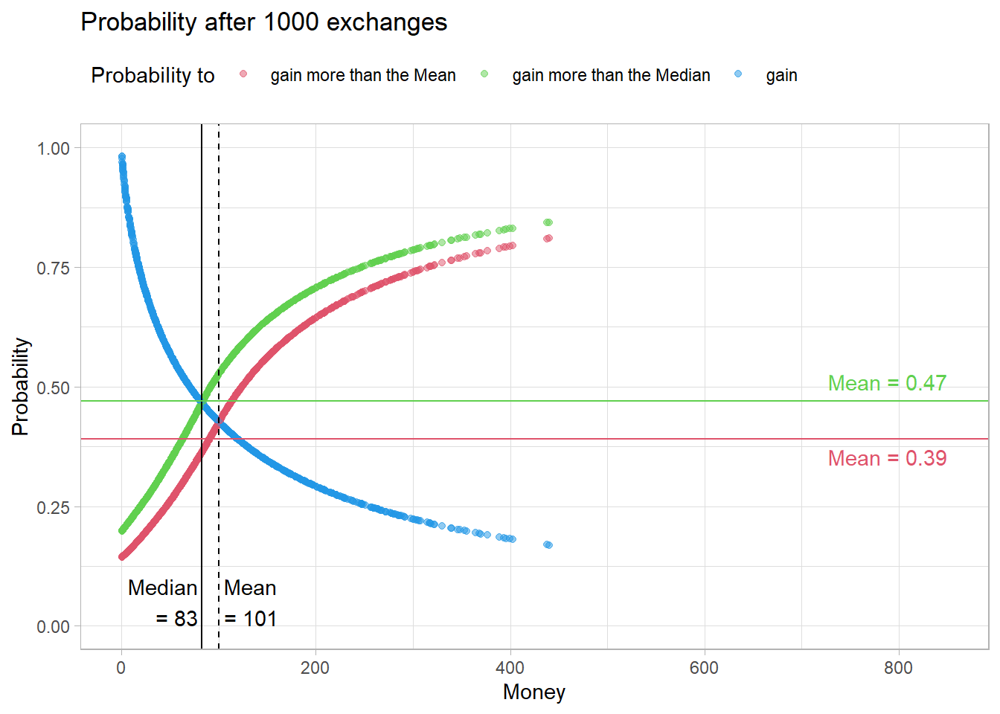
This effect intensifies over time.
Code
Fig05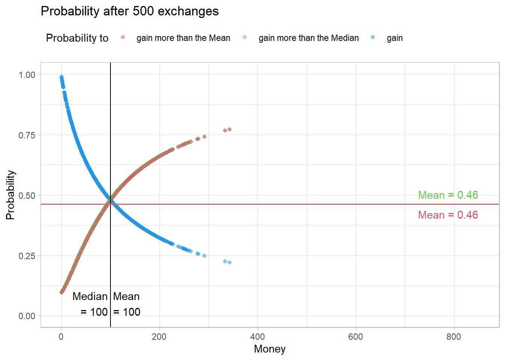
After 50000 meetings, the distribution of probabilities in the population looks like this.
Code
Fig06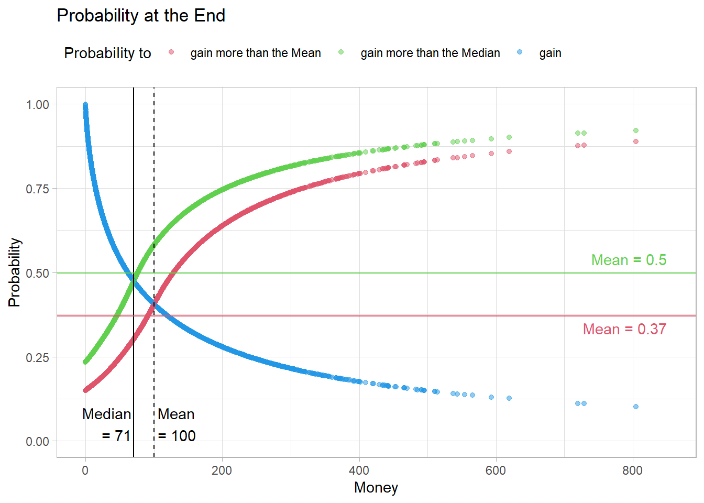
It seems that the probability of ending up above the median rises back to 0.5. However, the probability of ending up above the mean remains low.
Probabilities over Time
Code
ProbNormt <- calc_p_t(sNorm$Timeline)This can be seen even better when looking at the said probabilities over time.
Code
Fig07 <-figProb_t(ProbNormt, "Probability to ... of Money - Timeline")
Fig07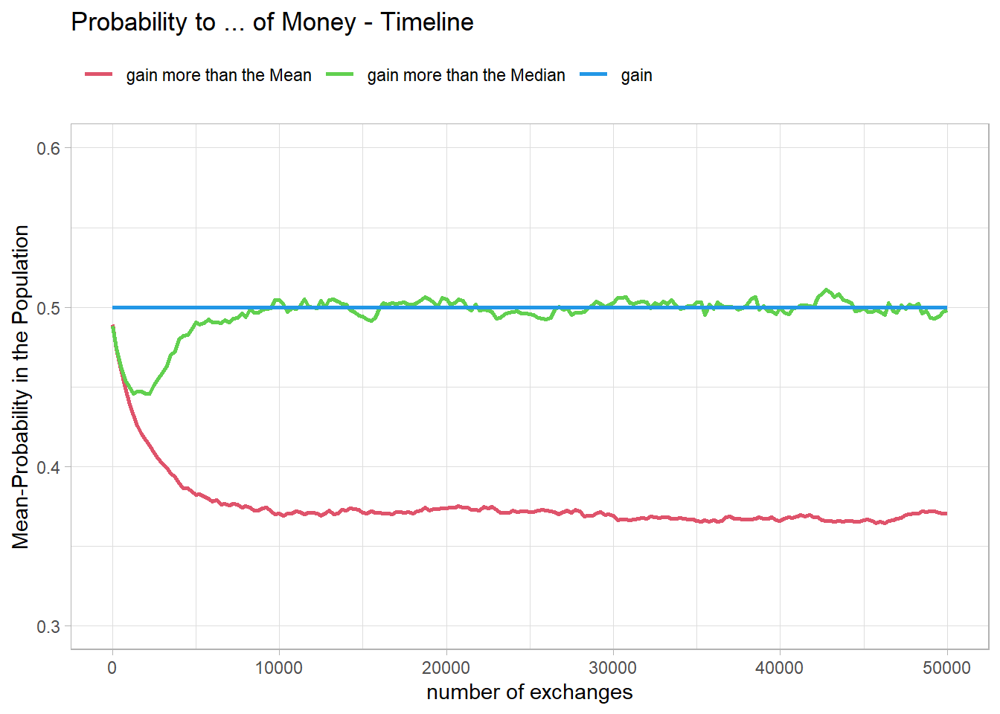
Equal Population
Simulation for 50000 exchanges with output after every 250th exchange.
Code
eNorm <- ecosim(50000, PopEqual$Money, TL = 250)Presentation of the end results
At first glance, it seems illogical that a population where everyone starts with the same amount of money would result in a similar final distribution of money. However, the simulation proves this.
Code
Fig08 <- figHist(eNorm$Sum)
Fig08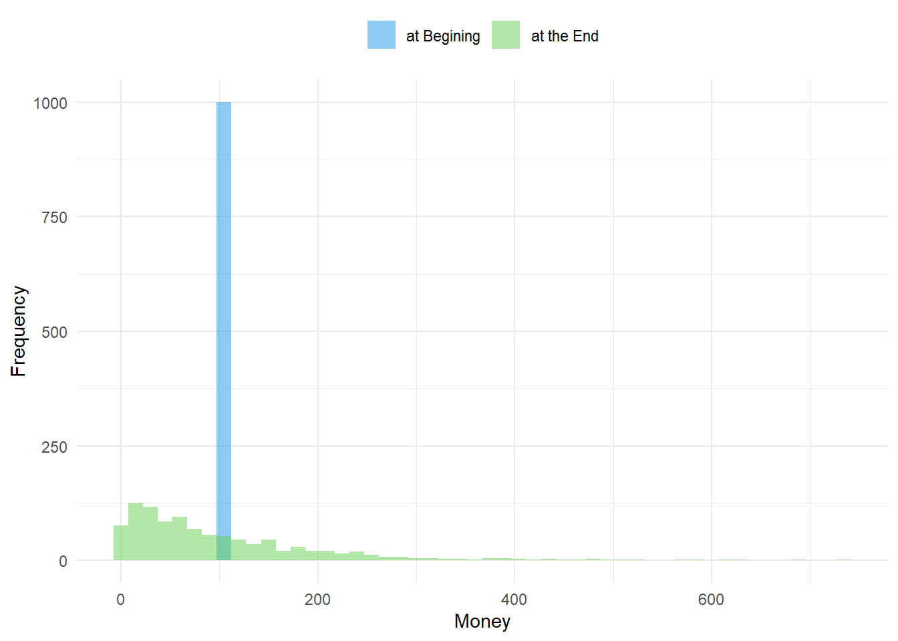
Probabilities for specific Timesteps
Code
Fig09 <- figProb(calc_p(eNorm$Timeline[,1]),
"Probability at Beginning", 850)
Fig10 <- figProb(calc_p(eNorm$Timeline[,3]),
"Probability after 500 exchanges", 850)
Fig11 <- figProb(calc_p(eNorm$Timeline[,5]),
"Probability after 1000 exchanges", 850)
Fig12 <- figProb(calc_p(eNorm$Timeline[,NCOL(eNorm$Timeline)]),
"Probability at the End", 850)At the beginning, all probabilities are exactly 0.5.
Code
Fig09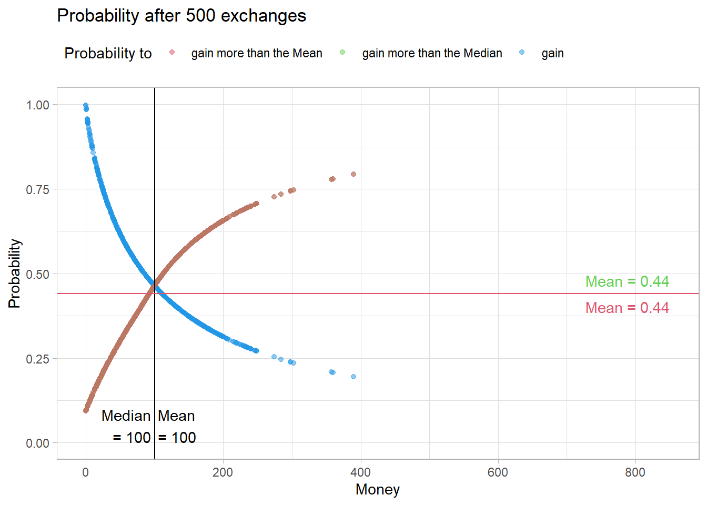
However, the same mechanism applies here. With each exchange, a rich and a poor agent are created.
Code
Fig10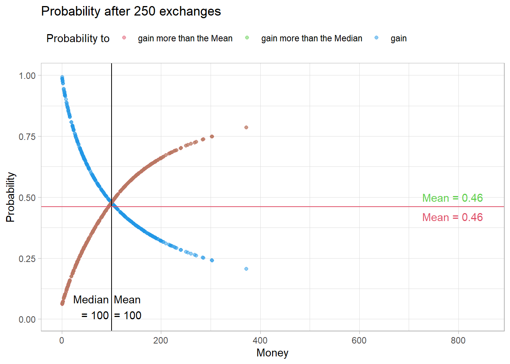
Therefore, the probability of meeting a rich agent in the future also decreases here. As a result, the probability of ending up above the median or the mean decreases here as well.
Code
Fig11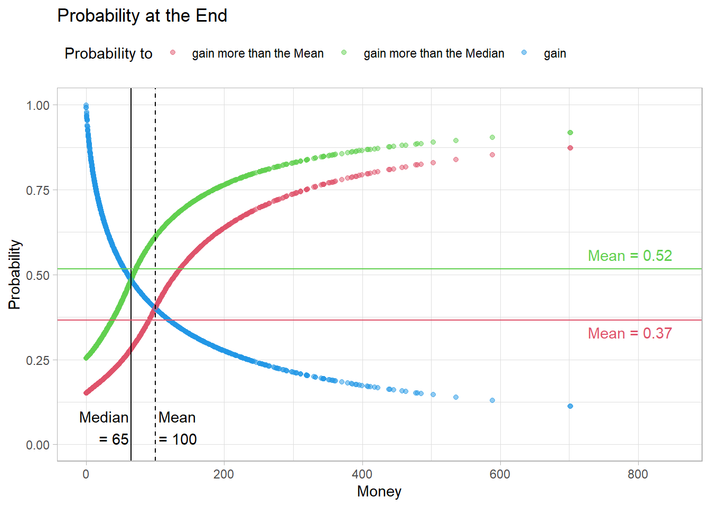
After 50000 meetings, the distribution of probabilities in this population looks almost identical.
Code
Fig12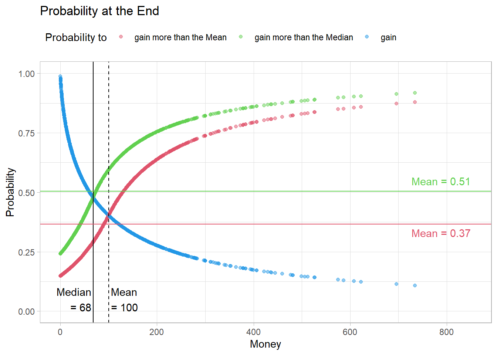
Probabilities over Time
This is even more evident over time.
Code
ProbEqualt <- calc_p_t(eNorm$Timeline)However, it seems that the median amount of money remains stable a bit longer.
Code
Fig13 <- figProb_t(ProbEqualt, "Probability to ... of Money - Timeline")
Fig13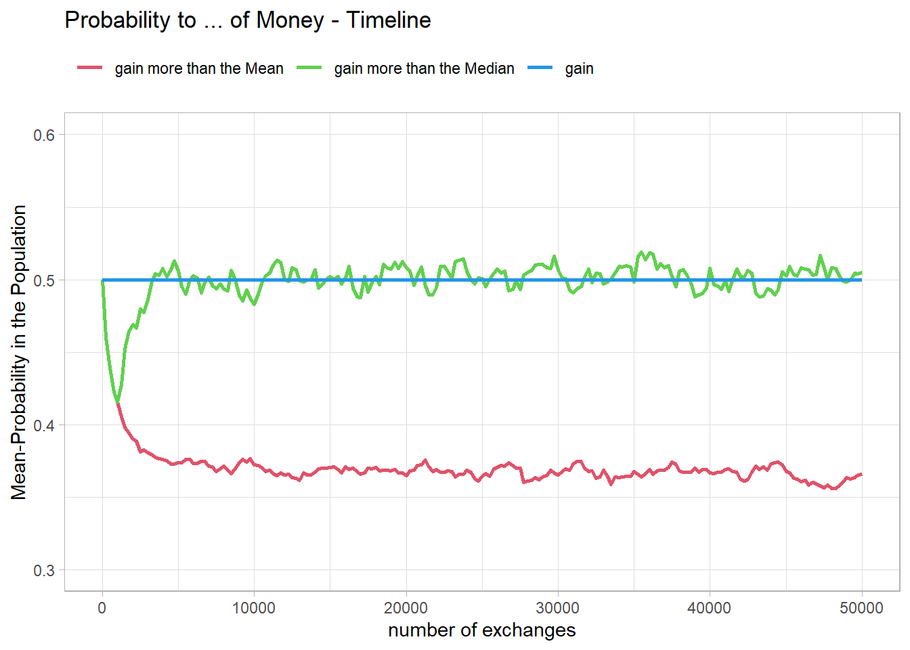
Comparison
To better compare the two populations, two new simulations are conducted. The number is restricted to the interesting initial range, and the time resolution is increased.
Code
sNorms <- ecosim(8000, PopNorm$Money, TL = 50)
ProbNormts <- calc_p_t(sNorms$Timeline)
eNorms <- ecosim(8000, PopEqual$Money, TL = 50)
ProbEqualts <- calc_p_t(eNorms$Timeline)Probabilities over Time
Code
Fig14 <- figProb_t(ProbNormts,
"Probability to ... of Money\nTimeline for the Norm Population")
Fig15 <- figProb_t(ProbEqualts,
"Probability to ... of Money\nTimeline for a equal Population")It actually shows that in the population with the normal distribution, the probabilities for the median and the mean separate earlier.
Code
Fig14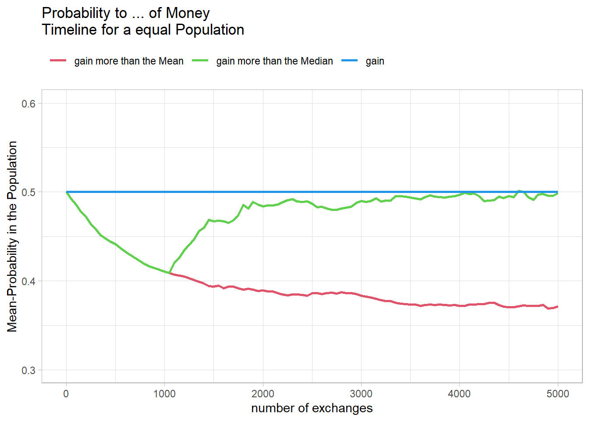
In the population with the same initial amount of money, the two lines remain very close together, meaning that the median and mean amounts of money remain almost identical.
Code
Fig15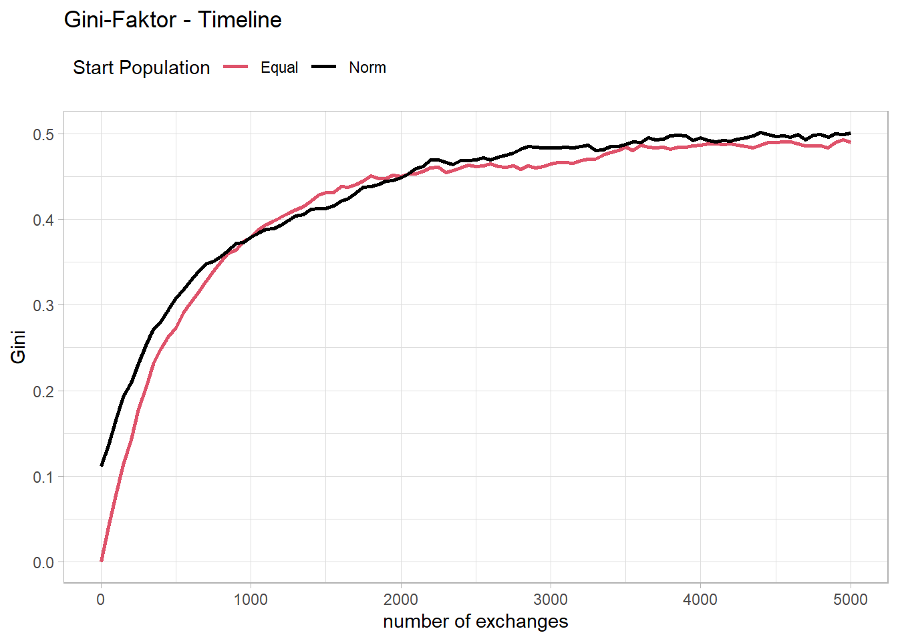
This makes sense because the meetings are random, and therefore some agents keep their starting balance of 100 longer. After 2500 meetings, or about two meetings per agent, this becomes increasingly unlikely.
Exploration
Since I have not yet used the Gini coefficient described in the article, it is now plotted over time for the two populations.
Code
Fig16 <- data.frame( Time = ProbNormts[ProbNormts$Res == "Money",c("Time")],
Norm = gini_t(sNorms$Timeline),
Equal = gini_t(eNorms$Timeline)
)
Fig16 <- pivot_longer(data.frame(Fig16),
cols = !matches("Time"),
names_to = "Pop",
values_to = "Gini"
)
Fig16p <- ggplot(data = Fig16, aes(x = Time, y = Gini, color = Pop)) +
geom_line(linewidth = 1) +
scale_color_manual(name = "Start Population", values = c(2, 1)) +
ggtitle("Gini-Faktor - Timeline") +
xlab("number of exchanges") +
ylab("Gini") +
theme_light() +
theme(legend.position = "top",
legend.justification = c(0, 1))
Fig16p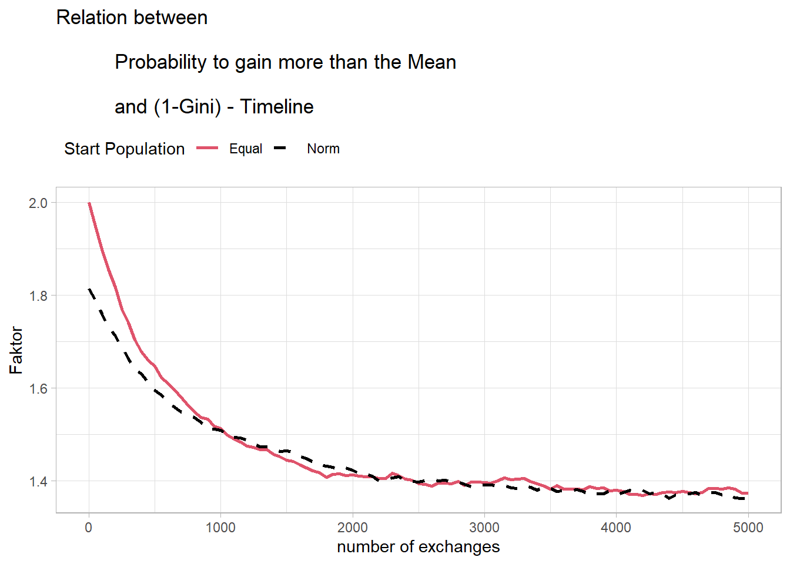
It seems that the course is quite similar to the course of the probability of ending up above the mean of the distribution. A closer look shows that the reciprocal of the Gini coefficient matches quite well with the probability of ending up above the mean of the distribution.
Code
Fig17 <- data.frame( Time = ProbNormts[ProbNormts$Res == "Money",c("Time")],
GNorm = (1-Fig16[Fig16$Pop == "Norm","Gini"]),
PNorm = ProbNormts[ProbNormts$Res == "probmean",c("mean")],
GEqual = 1-Fig16[Fig16$Pop == "Equal","Gini"],
PEqual = ProbEqualts[ProbEqualts$Res == "probmean",c("mean")]
)
colnames(Fig17) <- c("Time", "GNorm", "PNorm", "GEqual", "PEqual")
Fig17$Faktn <- Fig17$GNorm/Fig17$PNorm
Fig17$Fakte <- Fig17$GEqual/Fig17$PEqual
Fig17 <- pivot_longer(data.frame(Fig17),
cols = starts_with("F"),
names_to = "Pop",
values_to = "Fakt"
)
Fig17p <- ggplot(data = Fig17,
aes(x = Time, y = Fakt, color = Pop, linetype = Pop)) +
geom_line(linewidth = 1) +
scale_color_manual(name = "Start Population",
values = c(2, 1),
labels = c("Equal", "Norm")) +
scale_linetype_manual("Start Population",
values = c("solid", "dashed"),
labels = c("Equal", "Norm")) +
ggtitle("Relation between\n
Probability to gain more than the Mean\n
and (1-Gini) - Timeline") +
xlab("number of exchanges") +
ylab("Faktor") +
theme_light() +
theme(legend.position = "top",
legend.justification = c(0, 1))
Fig17p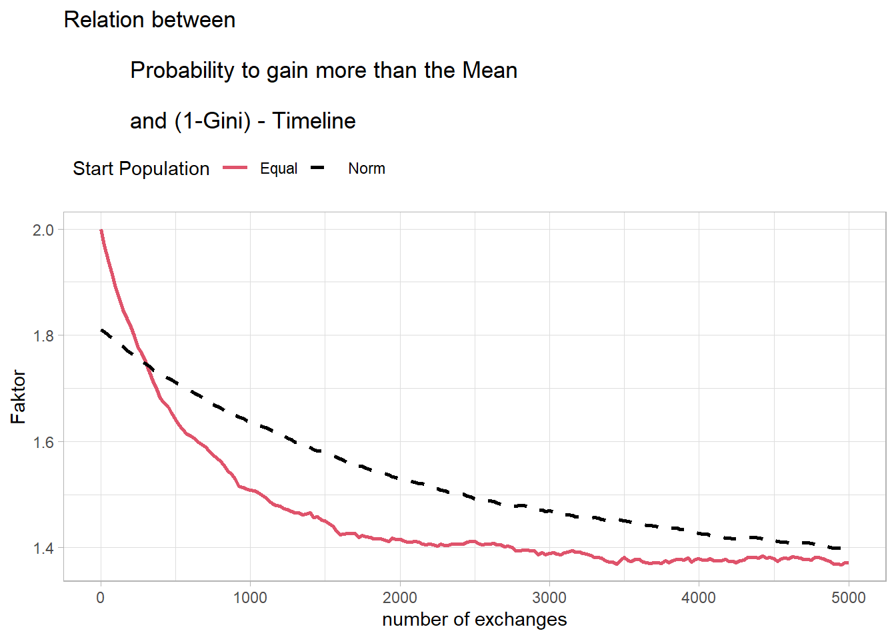
This could potentially allow for the development of a mathematical model for this mechanism. However, this exceeds my abilities and will be left to more capable individuals.